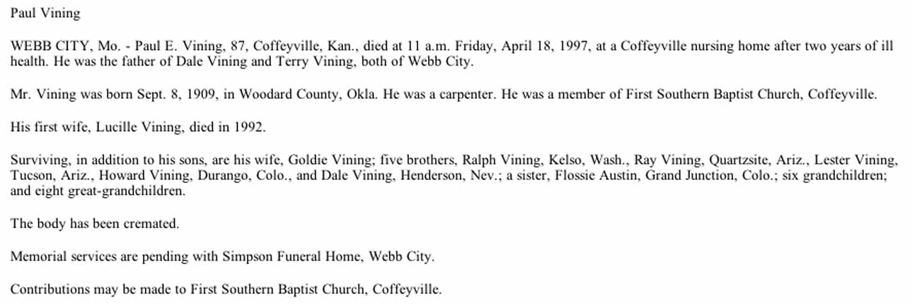
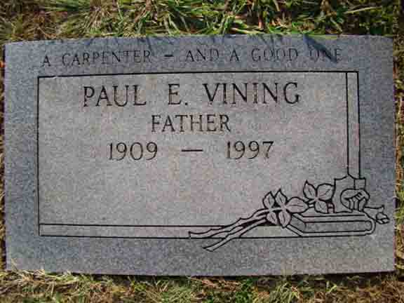

Documentation for Paul Edward Vining - (1) Lucille Marie King; (2) Goldie [...]
Census Data
1940
Paul Edward Vining
30
Lucille Marie (King) Vining
23
Goldie ([...]) Vining
daughter Vining
dead
[?] Vining
3
Dale Vining
Terry Vining
Gerald Lynn Vining
1940
Jefferson Township, Washington County, Oklahoma:
Death Data
Obituary for Paul Edward Vining:

Gravestone for Paul Edward Vining, in Mount Hope Cemetery, Webb City, Jasper County, Missouri (from Find A Grave):
